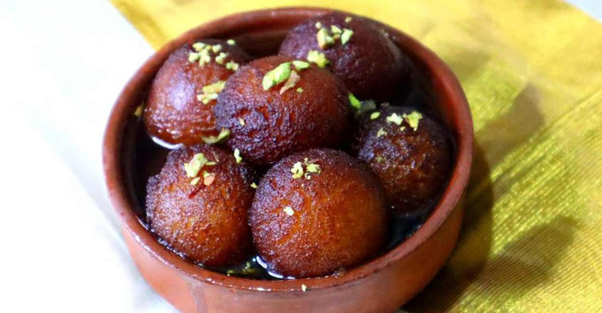
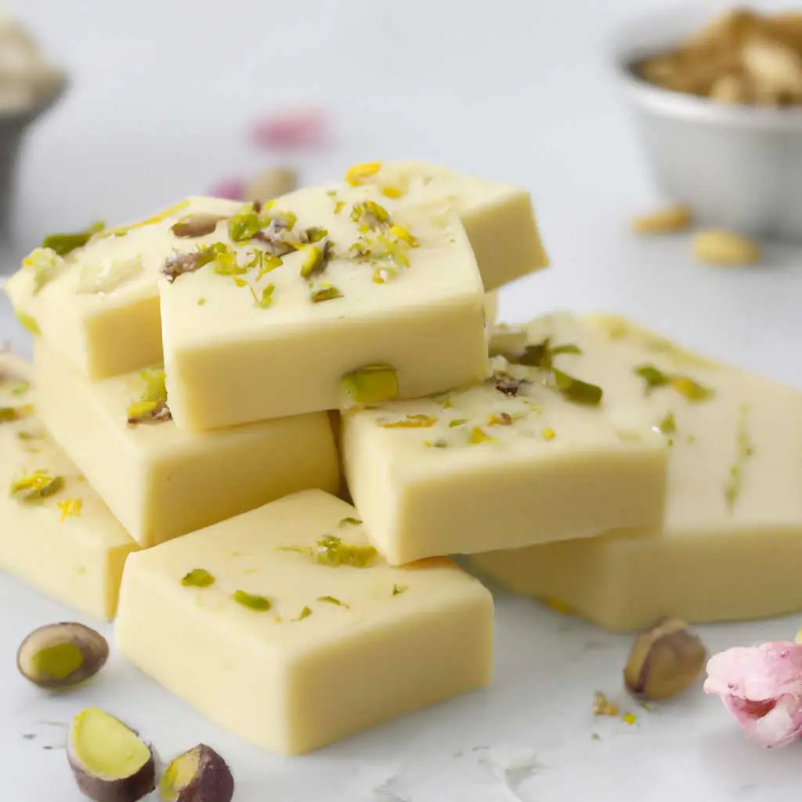
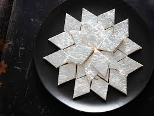

Gulab Jamun
Ingredients
- Sugar
- Milk
- Ghee
- Almonds
Recipe
Step 1: Combine sugar and water in a pan and bring to a boil to create the syrup. Remove from heat, add cardamom, and set aside to cool.
Step 2: In a mixing bowl, combine flour, paneer, sooji, Nestlé MILKMAID, baking powder, and baking soda. Mix gently to form a soft dough, avoiding over-kneading. Step 3: Divide the dough into 30-35 portions and gently shape them into round balls. Step 4: Heat oil on low flame and fry the balls until they turn golden brown. Step 5: Transfer the fried Gulab Jamuns into the cooled sugar syrup. Once all the Gulab Jamuns are added, bring the syrup to a boil again briefly, then remove from heat. Step 6: Enjoy your homemade Gulab Jamun warm, garnished with your favourite toppings.
Barfi
Ingredients
- 2½ cup milk powder, full cream
- ¾ cup sugar
- 1 cup milk
- ¼ cup ghee / clarified butter
Recipe
Step 1: firstly, in a bowl take 2½ cup milk powder, ¾ cup sugar and 1 cup milk.
Step 2: whisk and mix well until everything is well combined. Step 3: transfer the mixture into large kadai. recommend using nonstick pan to prevent from sticking. Step 4: also add ¼ cup ghee and mix well on low flame. Step 5: keep stirring on low flame until the mixture thickens. Step 6: the mixture will hold the shape and starts to separate the pan after 10 minutes.Step 7: do not overcook, as the burfi will turn hard. and if the mixture is undercooked then it turns chewy.
Step 8: transfer the burfi dough into the tray lined with baking paper.
Step 9: press gently, making sure its leveled up.
Step 10: top with few chopped pistachios and press gently.
Step 11: cover and refrigerate for 1 hour or until it sets completely.
Step 12: after 1 hour, unmould the burfi and cut with sharp knife.
Step 13: finally, milk burfi recipe tastes great for a week when stored in an airtight container.

Kaju Katli
Ingredients
- Nestlé MILKMAID Mini(1)
- 1/2 cup Nestlé a+ Toned Milk
- 150 gmsKaju (Cashew nuts)
- 150 gms khoya
Recipe
Step 1: Grind cashews into a fine powder. Mix all the Kaju Katli ingredients and blend until a smooth paste forms.
Step 2: Transfer the paste to a heavy-bottomed pan. Cook on low heat until the mixture thickens, starts to leave the sides of the pan, and forms a dough-like consistency. Step 3: Spread the mixture onto a tray and roll it to about 1/8 inch thickness. Allow it to cool, then cut Kaju Katli into diamond shapes.